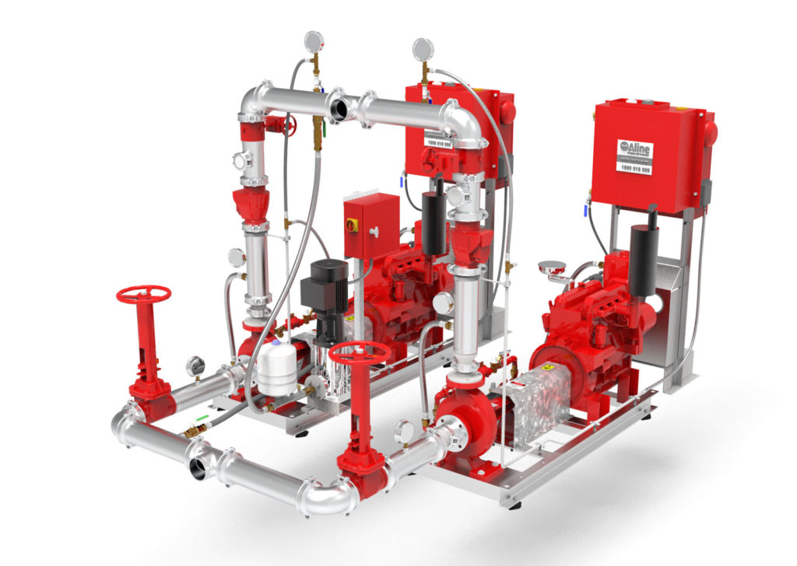
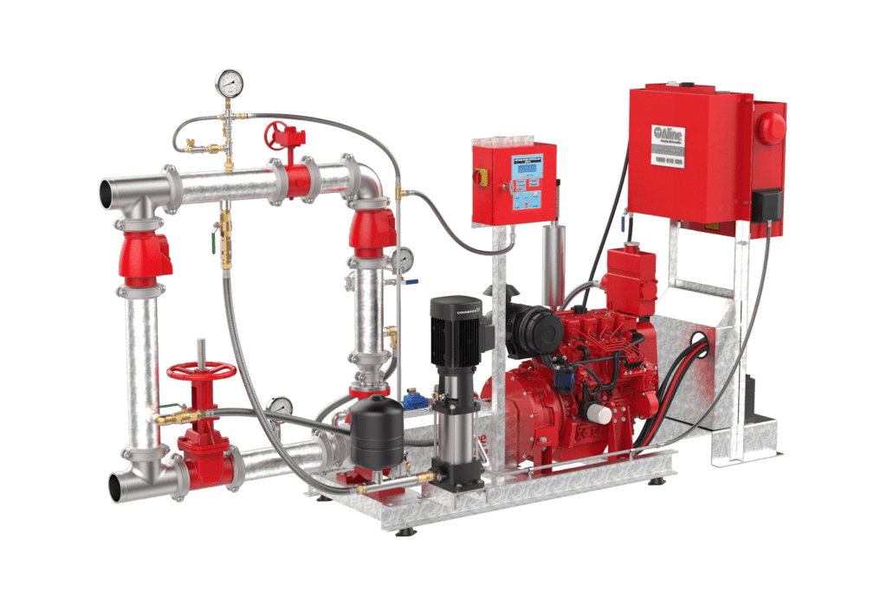
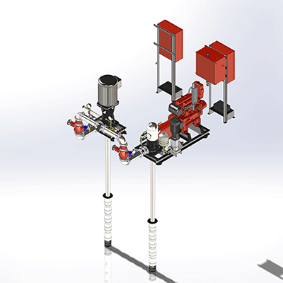
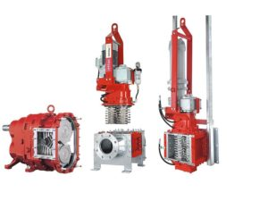
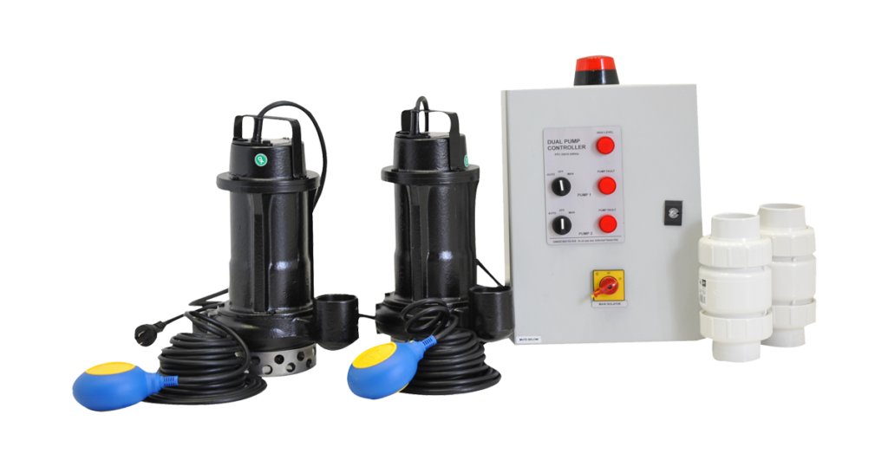

If you’re searching for fire fighting pumps for sale in Australia, Aline Pumps offers a comprehensive range of certified solutions that deliver performance, compliance, and convenience. Whether you need a standalone pump or a complete fire protection system, we provide tailored products to meet your project’s exact requirements, ready for fast delivery.
/wp:paragraph wp:headingWide Range of Fire Protection Pumps Available
/wp:heading wp:paragraphAline Pumps supplies industry-leading fire protection pumps, including:
/wp:paragraph wp:list- wp:list-item
- Diesel and Electric Fire Pumpsets /wp:list-item wp:list-item
- Fire Hydrant and Sprinkler Booster Pumps /wp:list-item wp:list-item
- Submersible Fire Pumps /wp:list-item wp:list-item
- Drencher and Deep-Well Turbine Pump Systems /wp:list-item





All pumps are engineered for high-pressure delivery and continuous flow, ensuring reliable performance during emergencies. We also stock a full suite of fire protection fittings—adaptors, valves, elbows, couplings, and more.
/wp:paragraph wp:headingCustom Solutions for Every Application
/wp:heading wp:paragraphIf our standard range doesn’t fit your hydraulic requirements, our engineering team can customise a fire pump package to suit your project’s specific needs. We design for diverse sectors, including:
/wp:paragraph wp:list- wp:list-item
- Agriculture & Irrigation (Wineries, Farms, Silos) /wp:list-item wp:list-item
- Industrial Facilities (Mills, Abattoirs, Cotton Gins) /wp:list-item wp:list-item
- Residential & Commercial Buildings (Apartments, High-rises) /wp:list-item wp:list-item
- Remote Operations (Cattle Stations, Grain Storage) /wp:list-item
Why Buy Fire Fighting Pumps from Aline Pumps?
/wp:heading wp:list- wp:list-item
- AS-compliant equipment manufactured to Australian standards /wp:list-item wp:list-item
- Custom hydraulic designs to suit complex installations /wp:list-item wp:list-item
- Swift lead times—orders dispatched within 1-2 weeks /wp:list-item wp:list-item
- Nationwide shipping & installation services across Australia and Pacific regions /wp:list-item wp:list-item
- End-to-end support, including after-sales repairs, replacements, and maintenance /wp:list-item
Standard Features of Our Pump Packages:
/wp:heading wp:list- wp:list-item
- Dual diesel/electric booster systems for hydrants and sprinklers /wp:list-item wp:list-item
- Single diesel/electric units with optional weatherproof enclosures /wp:list-item wp:list-item
- Variable speed options: Delta, DOL, Soft Start, Star /wp:list-item wp:list-item
- Deep-well turbine pump solutions (air or liquid-cooled) /wp:list-item
Professional Installations for Various Applications
/wp:heading wp:paragraphNeed to know if the performance and specifications will meet your needs? We can develop a customised strategy to suit your project’s goals if our core range of fire protection pump products is not appropriate.
/wp:paragraph wp:paragraphOur wide selection of industry-leading diesel and electric water pumps are all made to the highest fire fighter industry standards.
/wp:paragraph wp:headingOur Service Locations
/wp:heading wp:paragraphOur high-quality Fire Protection Pump solutions are available for agricultural businesses and other industrial facilities in the following locations:
/wp:paragraph wp:list- wp:list-item
- New South Wales /wp:list-item wp:list-item
- Queensland /wp:list-item wp:list-item
- Northern Territory /wp:list-item wp:list-item
- Australian Capital Territory /wp:list-item wp:list-item
- South Australia /wp:list-item wp:list-item
- Pacific Islands including New Zealand /wp:list-item
With our top products and pumping solution expertise, we’ll help you achieve building code compliance.
/wp:paragraph wp:paragraphCall us on 1800 018 999 today to discuss Fire Protection Pump prices for your establishment or construction project.
/wp:paragraph wp:paragraph /wp:paragraph